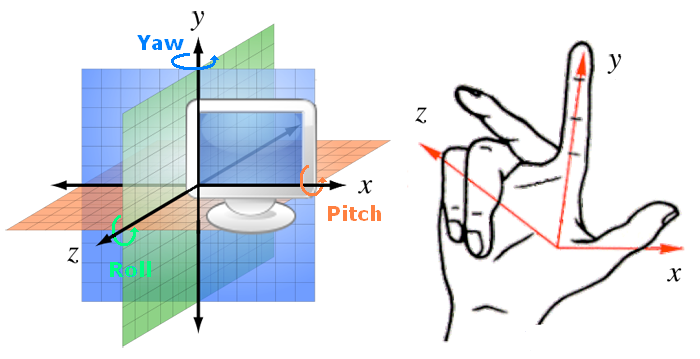
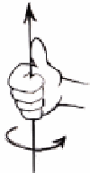

PureBasic - Engine3D
概要
PureBasic provides easy access to a very powerful OpenSource 3D Engine called OGRE. This choice has been made because we don't like to reinvent the wheel every time and when we saw the OGRE code quality, we felt that it would make a considerable contribution to the PureBasic 3D library.
OGRE is still under heavy development and will probably become a very advanced engine soon. Its community is growing more and more and many tools are available to make the most of this engine (e.g. Blender, Lightwave and 3DS Max exporters, Terrain manager etc.). More information about OGRE is available at OGRE web site. The OGRE license file can be consulted here (read more in Licensing FAQ) and PureBasic customized OGRE source files can be downloaded from here.
Note: If you use the 3D engine of PureBasic in your projects and you intent to distribute your executable, you will have to copy the Engine3D.dll from the PureBasic/Compilers directory to your main project directory.
Spatial conventions
OGRE uses the following spatial conventions:
The spatial reference of OGRE is direct and the rule of the 'three fingers' of the right hand allows us to find easily the position of the axes X, Y and Z in the 3D World.
Attention, the Z axis is facing you.
Definition of: Roll, Pitch and Yaw:
- Pitch is a rotation around the x axis.
- Yaw is a rotation around the y axis.
- Roll is a rotation around the z axis.
Positive direction:
The positive direction for a rotation around an axis.
Thumb in the direction of the axis as indicated, the direction of the fingers gives the positive direction of the rotation.
(Use your right hand).
命令索引
Add3DArchive
AmbientColor
AntialiasingMode
CheckObjectVisibility
ConvertLocalToWorldPosition
ConvertWorldToLocalPosition
CreateWater
EnableWorldCollisions
EnableWorldPhysics
Engine3DStatus
ExamineWorldCollisions
FetchOrientation
FirstWorldCollisionEntity
Fog
FreeWater
GetW
GetX
GetY
GetZ
InitEngine3D
InputEvent3D
LoadWorld
MousePick
MouseRayCast
NextWorldCollision
NormalX
NormalY
NormalZ
Parse3DScripts
PickX
PickY
PickZ
Pitch
PointPick
RayCast
RayCollide
RayPick
RenderWorld
Roll
SecondWorldCollisionEntity
SetGUITheme3D
SetOrientation
SetRenderQueue
ShowGUI
SkyBox
SkyDome
Sun
WaterColor
WaterHeight
WorldCollisionAppliedImpulse
WorldCollisionContact
WorldCollisionNormal
WorldDebug
WorldGravity
WorldShadows
Yaw
已支持操作系统
所有参考手册 - 索引